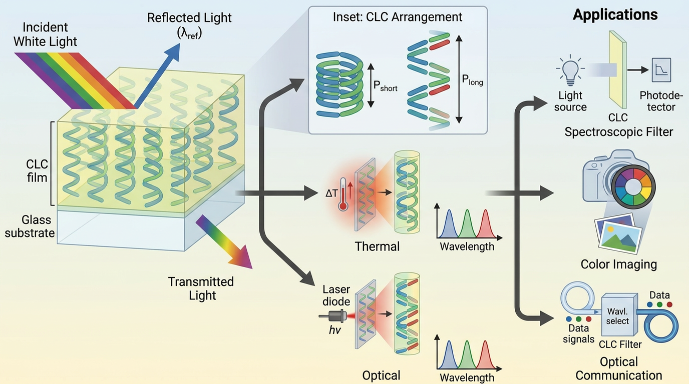
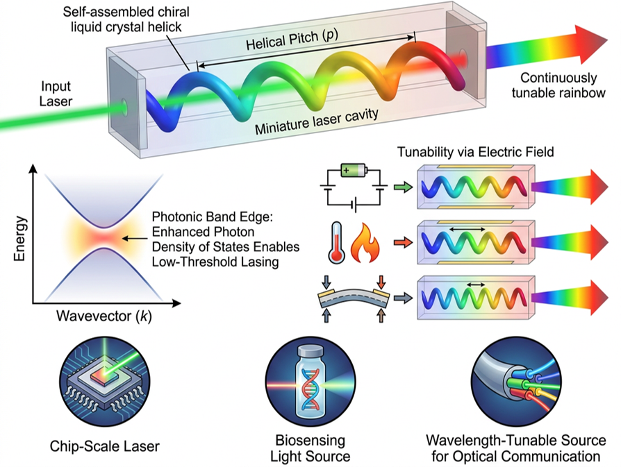
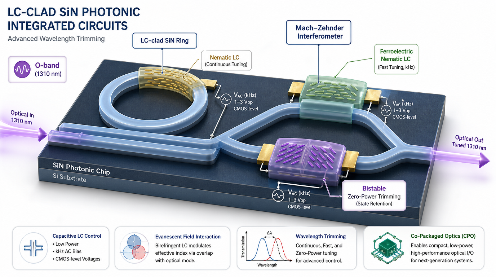
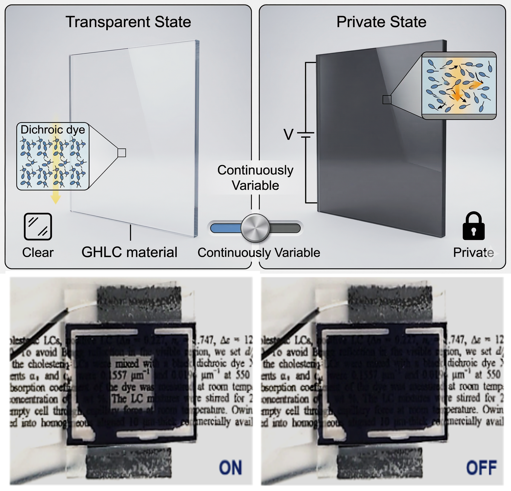

SPEL은 액정, 고분자, 엘라스토머 등 소프트 소재의 주기 구조·분자 배향·광학 이방성에 주목하여, LIGHT · ENERGY · MOTION을 아우르는 차세대 가변형·유연 소자를 연구합니다.

기계변색 신축성 포토닉스
Chiral liquid crystal elastomers (CLCEs) self-assemble into helical structures whose reflection wavelength shifts across the entire visible spectrum under mechanical deformation. We engineer this mechanochromism into soft photonic skins for optical encryption, strain visualization, reflective displays, and adaptive optical systems.

자극 응답형 가변 광학 필터
Chiral liquid crystals selectively reflect the wavelength set by their helical pitch, and that pitch can be rewritten in real time by electrical, thermal, or optical stimuli. We design tunable photonic bandgap filters for spectroscopy, color imaging, and wavelength-selective optical communication.

광대역 파장 가변 레이저
The self-assembled helix of a chiral liquid crystal acts as a distributed feedback cavity, with no external resonator required. Combined with gain media, this enables low-threshold lasing that tunes across a broad wavelength range via electric field, temperature, or strain, toward chip-scale lasers, biosensing sources, and tunable telecom emitters.

액정 기반 실리콘 포토닉스
Thermo-optic heaters keep today's photonic circuits on-wavelength at the cost of milliwatts per element. A liquid crystal cladding does the same job capacitively: its giant birefringence (Δn ≈ 0.2) tunes SiN ring resonators and Mach–Zehnder interferometers at the telecom O-band (1310 nm) while holding the phase at near-zero static power. We are scaling this into a low-power tuning and reconfiguration layer for co-packaged optics (CPO), using ferroelectric nematic LCs for GHz phase shifting and bistable LCs for zero-power trimming.

적외선 선택 반사 스마트 윈도우
By designing the CLC photonic band at infrared wavelengths, we create windows that selectively reflect solar heat while staying visibly transparent and adapt in real time to external stimuli. Applications include architectural smart windows, adaptive thermal management, and energy-efficient buildings.

투과도 가변 광소자
Guest-host liquid crystals doped with dichroic dyes provide continuous, broadband transmission control through field-driven absorption. We optimize these devices for dimming glass, privacy windows, display shutters, and light modulators, including ultra-thin films for AR devices and smart eyewear.

소프트 액추에이터 및 로보틱스
Dielectric elastomer actuators (DEA), liquid crystal elastomer actuators (LCEA), and PVDF platforms deform gently and programmably, like artificial muscle. We develop these soft actuation technologies for soft grippers, wearable robots, and minimally invasive medical microactuators.

멀티피직스 시뮬레이션 및 AI 기반 소자 최적화
Three simulation axes work together: Lumerical FDTD for electromagnetic-optical analysis, COMSOL/ABAQUS for multiphysics finite-element analysis, and MATLAB/Python machine-learning pipelines for design-space exploration. The goal is an experiment–simulation feedback loop that accelerates device optimization and enables inverse design.